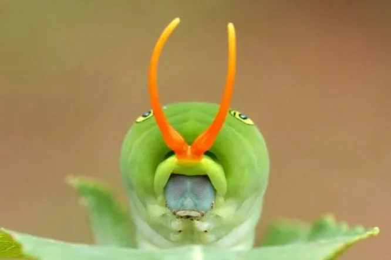

Интересные факты: «темная сторона» бабочек
Нам всегда интересен окрас бабочек, их узоры. Мы считаем, что они безобидны, красивы и больше ничего интересного о них не скажешь, всё и так известно. Но как много вы на самом деле знаете об этих насекомых? Поверьте, в них есть нечто большее, чем красота! Бабочка — один из самых трогательных и романтических образов. Однако некоторые детали жизни бабочек не столь возвышенны: они пьют слезы, питаются пометом, носят фальшивые головы и убивают других, чтобы выжить. Рассказываем, что скрывается за нежным обликом красивых насекомых, вы узнаете самые удивительные факты о бабочках.

Необычные вкусовые рецепторы
Навоз и слезы: привычное меню. Интересные факты из жизни бабочек — они не только пьют нектар цветов. В рацион многих из них входят такие неожиданные и отталкивающие «блюда», как помет, моча и разлагающееся мясо животных. Чтобы получить необходимый для них натрий, они пьют слезы рептилий. Это используют ученые в работе с бабочками. Например, чтобы привлечь тропическую бабочку клетчатый шкипер, исследователи плюют на ткань и кладут ее на землю. Бабочек манит пропитанный слюной кусок материи, потому что он напоминает им птичий помет, и присев, они остаются — ведь в слюне содержится натрий и другие питательные вещества. Такой способ привлечения бабочек для исследований называется методом Аренхольца.
"Крокодиловы слёзы" - интересные факты о бабочках
Иногда бабочки садятся на каймана и пьют его солёные слёзы.
Миф или факт: что едят для сохранения своей жизни
Хищные и плотоядные.Думаете все бабочки робкие и милые? Нет, а вот вам интересный факт из жизни бабочки. Не волнуйтесь: вам не грозит стать жертвой атаки бабочек-людоедов. Но некоторые гусеницы действительно убивают других особей, чтобы сохранить себе жизнь. Взять хотя бы Feniseca tarquinius, обитающую в Северной Америке: она откладывает яйца в колонии тлей, и гусеницы растут, пожирая тлей и иногда защищая себя трупами убитых жертв. Недаром Feniseca tarquinius по-английски в народе зовется harvester, т. е. «жнец», «комбайн».
Факты о бабочках
Среда обитания: Лиственные или смешанные леса вдоль ручьев.
Привередливый вкус: интересные факты из жизни бабочек
Бабочки-гурманы. Удивительные факты о бабочках: бывают крайне придирчивыми в вопросах гастрономии и в этом они необычны. Положим, вы создали сад, полный благоуханных цветов, и ждете, что его заполнят прекрасные бабочки. И вот они уже порхают над цветами, но погодите! — если вы не озаботитесь правильным выбором растений, многие из них не смогут отложить яйца, и вы заманите их в генетический тупик. Гусеницы некоторых бабочек привередливо питаются только одним видом растений. Например, гусеница Plebejus melissa samuelis питается только диким голубым люпином. А гусеница роскошной данаиды монарх потребляет исключительно род растений ваточников, тогда как Callophrys gryneus выбирает для себя атлантический белый кедр — и только.«Растение-хозяин» — так называют все эти растения, т. к. они служат основной средой обитания и источником питания для организма. Как только гусеница превращается в бабочку, ее рацион расширяется, и она может выбирать себе и другие места жительства. Но если в нужный момент она не найдет свое растение-хозяина, то не сможет отложить яйца.
Бабочка "Callophrys gryneus" ест растение
На помощь: защита от паразитов
Муравьи в качестве няньки. Представители семейства голубянки доверяют заботу о своих детях... муравьям. Специальное вещество, выделяемое гусеницами, привлекает муравьев. Муравьи не дают гусеницам сбежать из гнезда, каждый раз возвращая их на место, и защищают от паразитов — порой ценой собственной жизни. Гусеницы в этом плане не самый благородный работодатель: своего няню-муравья они обеспечивают питательными веществами, но могут поглощать его личинки. Некоторые муравьи пытаются дать отпор и постепенно меняют свой химический набор пристрастий, чтобы не стать жертвой сигналов гусениц. Когда бабочки вырастают, их отношения с муравьями становятся еще более напряженными. Так, Adeloptypa annulifera, превратившись из гусеницы в бабочку, обкрадывает и объедает тех муравьев, которые ее «воспитали».
Муравьи "охраняют" гусениц - интересные факты из жизни бабочек
Размер чешуекрылых
Самые большие и самые маленькие. Факты про бабочек — они могут быть просто огромными. Например, размах крыльев птицекрылки королевы Александры может достигать 27 см. По контрасту, максимальный размах крыльев Brephidium exilis, вида семейства голубянки, не более 2 см. Представьте такую кроху у себя на ладони — ее легко можно не заметить.
Дневная бабочка: птицекрылка королевы Александры